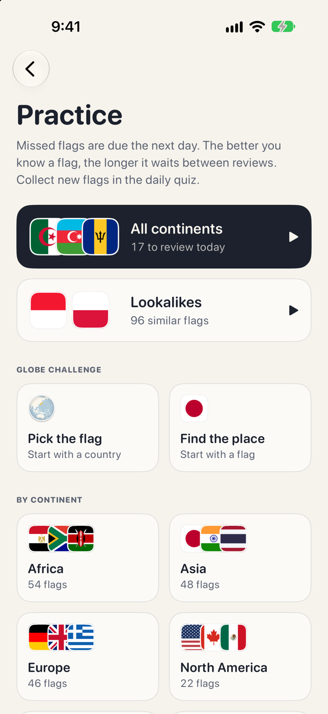
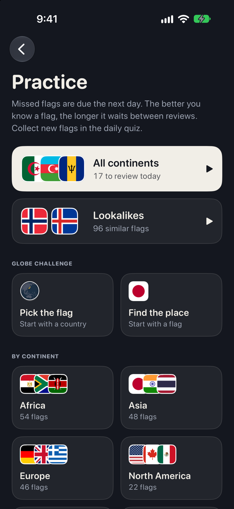

A minute a day is enough
Five flags, four names each. Pick one and see at once whether you were right. A new round arrives every day, and it is the same one for every player.
- Done in about a minute
- The same five flags for everyone, every day
- Compare your pick with the right flag when you miss


Watch your world fill in
Each flag you get right is collected. The album keeps count by continent, and the globe on the home screen is yours to turn: 197 countries, coloured in one by one.
- 197 flags to collect
- A booklet for every continent
- A globe you can spin, zoom, and tap
Freezes save your streak
Every seven days in a row earns a freeze. If you have one when you miss a day, Unfurl uses it automatically to keep your streak going.
- A calendar of every day you played
- Keep up to two freezes at a time
- Best streak, days played, and perfect days


Practice any time
The daily quiz is always free. Plus adds practice that adapts to how well you know each flag.
- Missed flags return tomorrow; known ones wait longer
- Play unlimited rounds by continent or across all 197 flags
- Practise telling similar flags apart
- Two globe rounds: pick the flag, or find the place
One purchaseNo subscription


Small things, done with care
Tell similar flags apart
Mix up two similar flags and Unfurl shows them side by side to compare.
iCloud sync
When you’re signed in to iCloud, your progress can sync to your other devices.
Daily reminder
Choose a reminder time for days when you haven’t finished the daily quiz.
Share your result
Share the day's score as squares or a picture card, with no spoilers.
Light and dark
Cream paper by day and night blue after dark, or whichever you prefer.
English and 繁體中文
Every screen and every country name, in both languages.